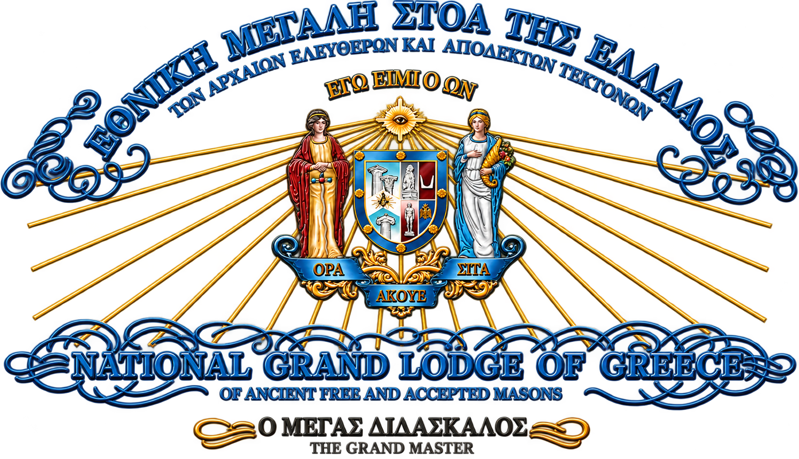

Επιλογή βαθμού / αξιώματος
Επίλεξε βαθμό για να δεις τη δημοσιευμένη σύνθεσή του. Η ενδυμασία καθορίζεται από τον δημιουργό της σύνθεσης.

Μέγας Διδάσκαλος, Σεβασμιώτατος Αδελφός Ιωάννης Μπενετάτος
Grand Master, Most Worshipful Brother Ioannis Benetatos
Παρουσίαση ενδυμασίας
Αποθήκευσε τις αλλαγές πριν αλλάξεις γλώσσα.
Επίλεξε βαθμό για να δεις τη δημοσιευμένη σύνθεσή του. Η ενδυμασία καθορίζεται από τον δημιουργό της σύνθεσης.